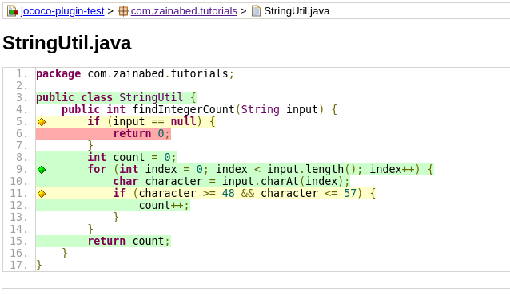
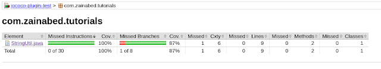

Introduction
In this tutorial we will see how to setup the JaCoCo plugin to generate a code coverage report for a Maven project.
In order to generate a unit test coverage report, we should have sufficient unit test cases in our application. For this tutorial, I am referring to a Maven project which has a string manipulation method.
You can find this project at this GitHub location.
There are a few steps that need to be taken to produce the report.
Install the Maven JaCoCo plugin.
Insert the following code into pom.xml.
<plugin>
<groupId>org.jacoco</groupId>
<artifactId>jacoco-maven-plugin</artifactId>
<version>0.8.2</version>
<executions>
<execution>
<goals>
<goal>prepare-agent</goal>
</goals>
</execution>
<execution>
<id>report</id>
<phase>test</phase>
<goals>
<goal>report</goal>
</goals>
</execution>
</executions>
</plugin>
Add a Unit Test
Create a class as StringUtil.java and add following snippet.
package com.zainabed.tutorials;
public class StringUtil {
public int findIntegerCount(String input) {
if (input == null) {
return 0;
}
int count = 0;
for (int index = 0; index < input.length(); index++) {
char character = input.charAt(index);
if (character >= 48 && character <= 57) {
count++;
}
}
return count;
}
}
Next, create a unit test class for above class as StringUtilTest.java.
package com.zainabed.tutorials;
import org.junit.jupiter.api.Test;
import static org.junit.jupiter.api.Assertions.assertEquals;
class StringUtilTest {
@Test
void should_return_count_of_numeric_value() {
StringUtil stringUtil = new StringUtil();
String input = "1name34sample;";
assertEquals(3, stringUtil.findIntegerCount(input));
input = "namesample";
assertEquals(0, stringUtil.findIntegerCount(input));
}
}
Now execute the maven build. It will generate the code coverage report.
mvn clean install
Build will generate following code coverage result

You can configure different goals of the JaCoCo plugin, such as restricting code coverage percentage.
Our application has 75% branch coverage so far. Let’s use the following snippet to configure the coverage limit by setting the execution configuration of the JaCoCo plugin and setting the value to 80%.
<execution>
<id>coverage-check</id>
<phase>test</phase>
<goals>
<goal>check</goal>
</goals>
<configuration>
<rules>
<rule>
<element>CLASS</element>
<limits>
<limit>
<counter>BRANCH</counter>
<value>COVEREDRATIO</value>
<minimum>80%</minimum>
</limit>
</limits>
</rule>
</rules>
</configuration>
</execution>
Now with this configuration build will fail.

We can make the build pass by improving the branch code coverage. Let us update the unit test as follows.
@Test
void should_return_zero_for_empty_string() {
StringUtil stringUtil = new StringUtil();
assertEquals(0, stringUtil.findIntegerCount(null));
}
Build the application again.
mvn clean install
Build will result the success as shown in following diagram

And the new report will include the code coverage above 80%.

Conclusion
Code coverage is a useful asset to improve unit testing of applications and JaCoCo facilitates it efficiently.